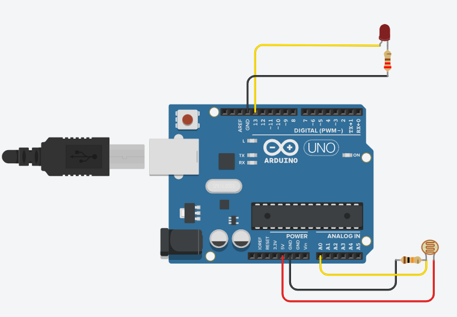

Sensor de Luminosidade com LDR

Objetivo
Criar um sistema que detecta a intensidade da luz ambiente usando um sensor LDR (Light Dependent Resistor) e acende um LED quando o ambiente fica escuro, funcionando como um sistema automático de iluminação.
Materiais Necessários
- Arduino Uno (ou similar) - 1 unidade
- Sensor LDR - 1 unidade
- LED - 1 unidade
- Resistor 10kΩ - 1 unidade
- Resistor 220Ω - 1 unidade
- Jumpers - Alguns
- Protoboard - 1 unidade
- Cabo USB - 1 unidade
Passo a Passo da Montagem
Esquema das ligações:
Sensor LDR:
- Um terminal do LDR conectado ao 5V do Arduino.
- Outro terminal do LDR conectado ao pino analógico A0 e também a um resistor de 10kΩ.
- A outra extremidade do resistor de 10kΩ conectada ao GND (formando um divisor de tensão).
LED:
- Anodo (perna maior) do LED conectado ao pino digital 13.
- Cátodo (perna menor) do LED conectado ao GND através de um resistor de 220Ω.
Código
// Definição dos pinos
const int pinoLDR = A0; // Sensor LDR no pino analógico A0
const int pinoLED = 13; // LED no pino digital 13
// Valor limite para considerar ambiente escuro
const int limiarEscuro = 500; // Ajuste este valor conforme a sensibilidade desejada
void setup() {
pinMode(pinoLED, OUTPUT); // Define o LED como saída
Serial.begin(9600); // Inicia comunicação serial para monitoramento
}
void loop() {
// Lê o valor do sensor LDR (0 a 1023)
int valorLDR = analogRead(pinoLDR);
// Exibe o valor no monitor serial
Serial.print("Valor do sensor: ");
Serial.println(valorLDR);
// Verifica se está escuro
if (valorLDR > limiarEscuro) {
digitalWrite(pinoLED, HIGH); // Acende o LED se estiver escuro
} else {
digitalWrite(pinoLED, LOW); // Apaga o LED se estiver claro
}
delay(500); // Pequena pausa para estabilização
}
Explicação do Funcionamento
Este projeto funciona baseado nas propriedades do LDR (Light Dependent Resistor):
- O LDR é um componente cuja resistência varia conforme a intensidade da luz que incide sobre ele.
- Quando há muita luz, a resistência do LDR diminui.
- Quando há pouca luz (escuro), a resistência do LDR aumenta.
- O Arduino lê essa variação de resistência através do pino analógico A0.
- Se o valor lido for maior que o limiar definido (ambiente escuro), o LED acende.
- Se o valor lido for menor que o limiar (ambiente claro), o LED apaga.
Exemplo de entrada/saída:
- Ambiente claro: LED apagado.
- Ambiente escuro: LED aceso.
- O monitor serial exibe os valores lidos do sensor para ajudar na calibração.
Vídeo Demonstrativo
Dicas e Variações
Considerações importantes para este projeto:
- O valor do limiar (500) pode precisar de ajustes dependendo do seu ambiente e do LDR utilizado.
- Use o Monitor Serial para verificar os valores lidos e determinar o melhor limiar para seu ambiente.
- Você pode adicionar mais LEDs ou até mesmo um relé para controlar lâmpadas reais.
- Uma variação interessante é criar um sistema que varia a intensidade do LED proporcionalmente à luminosidade ambiente, usando PWM.
- Experimente adicionar um potenciômetro para ajustar o limiar de sensibilidade sem precisar reprogramar o Arduino.